Accessing Outlook.com
-
1Navigate to https://outlook.office.com
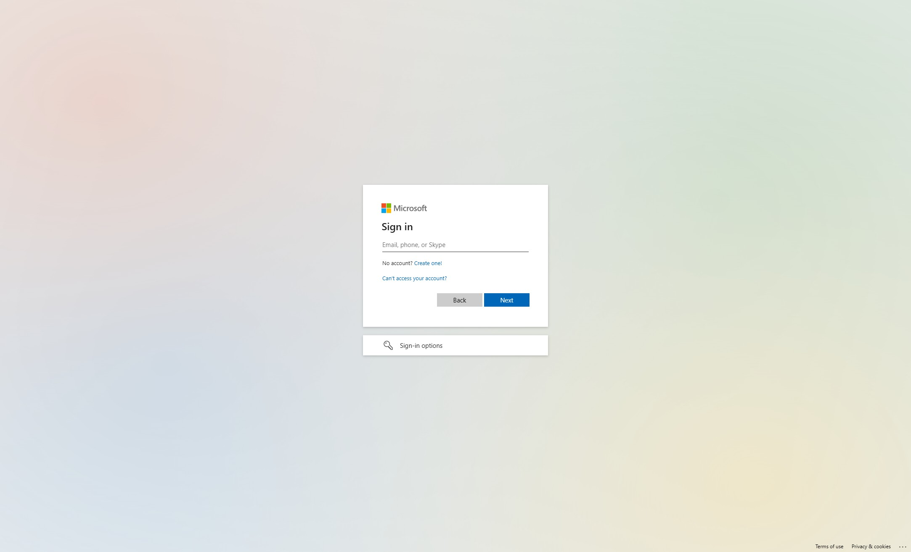
-
2Click the "Email, phone, or Skype" field.
-
3Click "Next"
-
Tip
If it asks, select the option for School/Work account, then click Next.
-
4Click "Sign In"
-
5Click "Yes" if you are on a private computer.\ Click "No" if you are on a public/office computer.
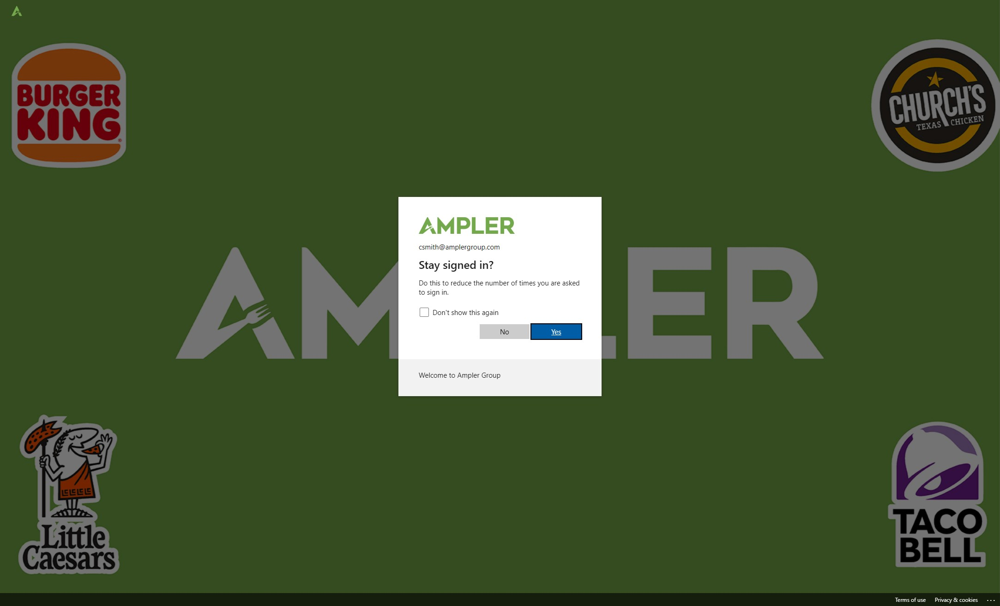
Outlook Desktop App (First Login) (DMs only)
-
6Click Windows icon
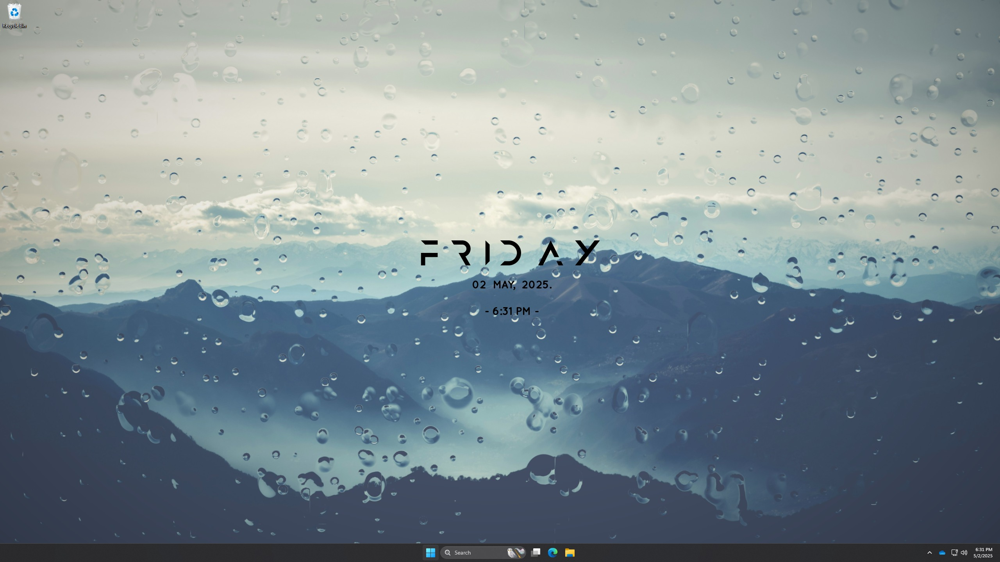
-
7Click "Outlook" You may have to search for it or download it.
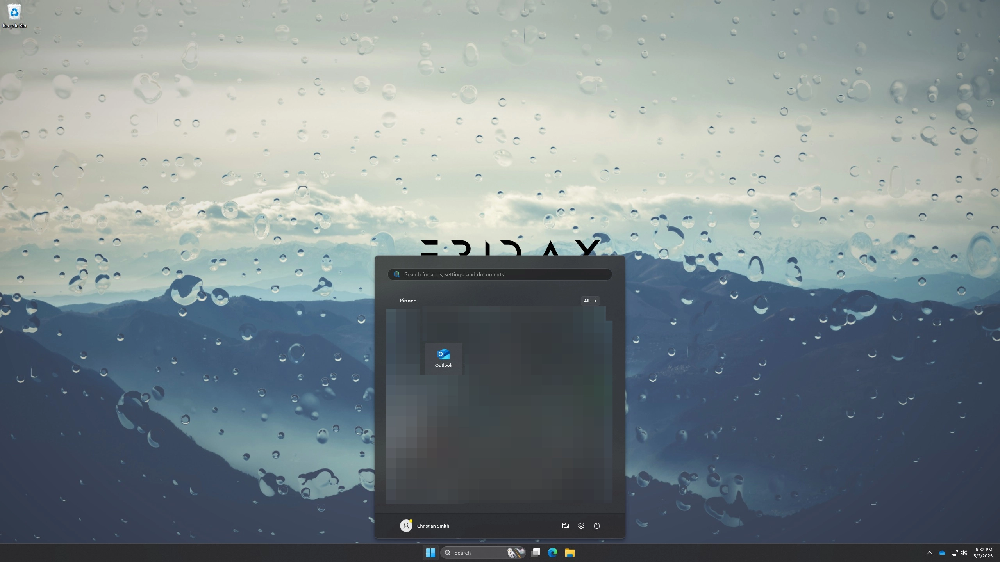
-
8Put in your email address.
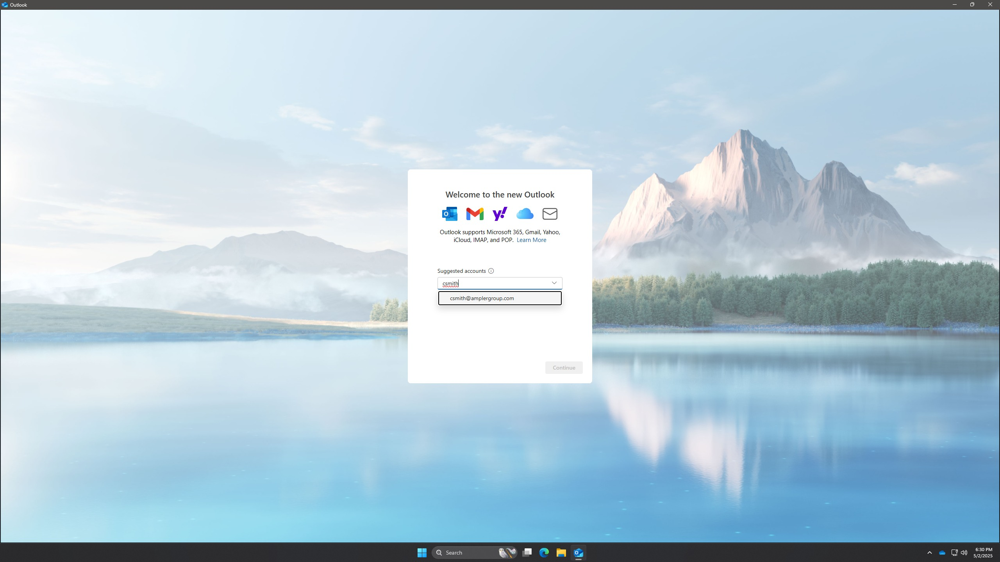
-
9Click "Continue"
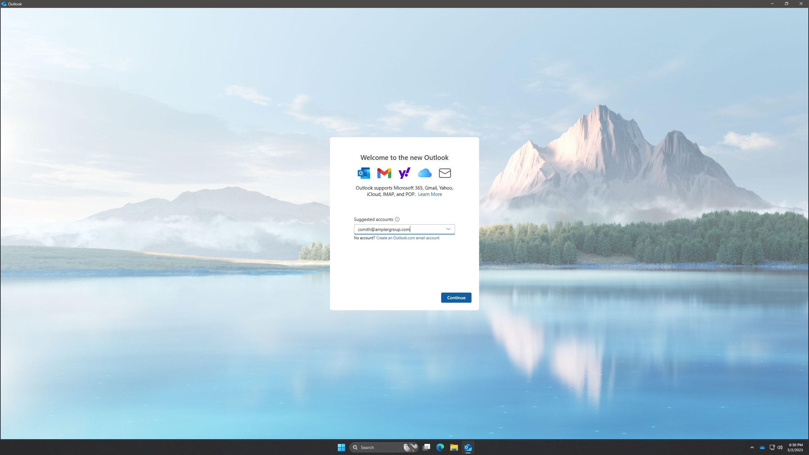
-
10Put in your password. Click "Sign in"

-
11Click "Yes" if you are on a private computer.\ Click "No" if you are on a public/office computer.

Outlook Desktop App (Add Account) (DMs only)
-
12Click Settings icon
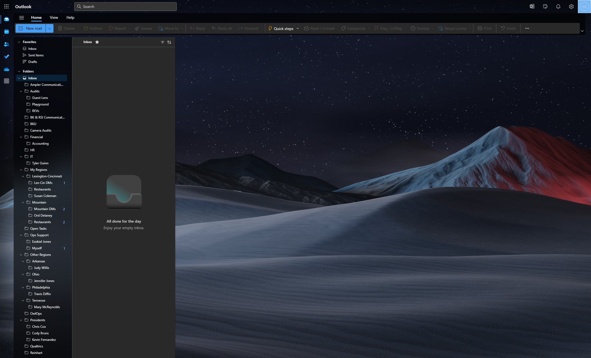
-
13Click "Sign in with a different account"
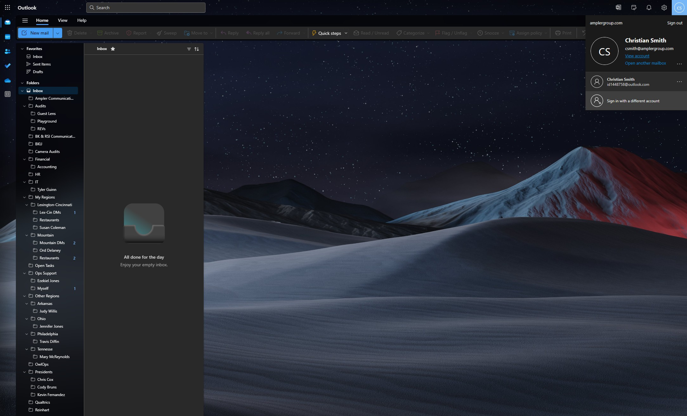
-
14Click "Use another account"
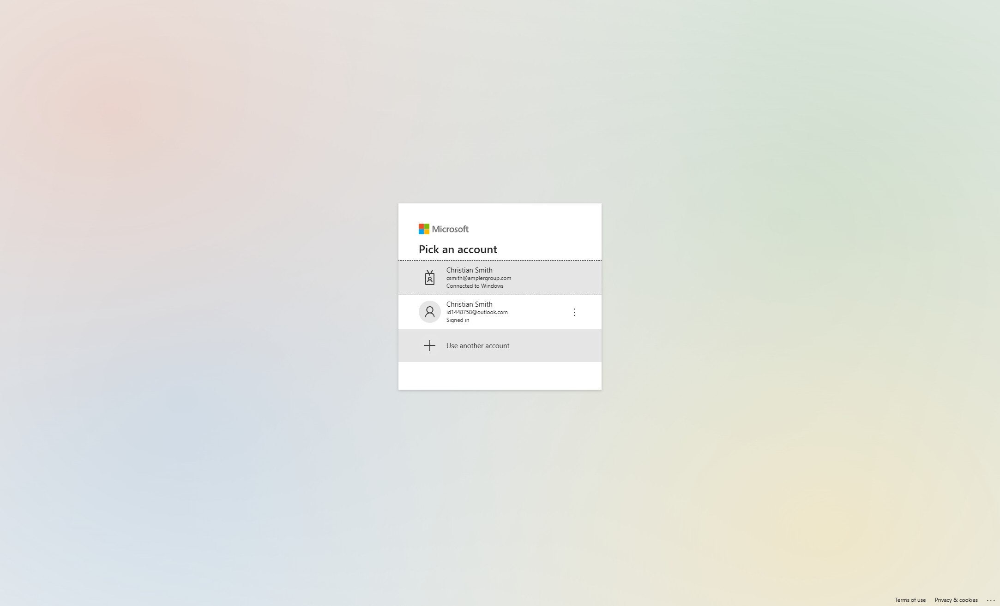
-
15Put in email address. Click "Next"
-
16Put in password. Click "Sign In"
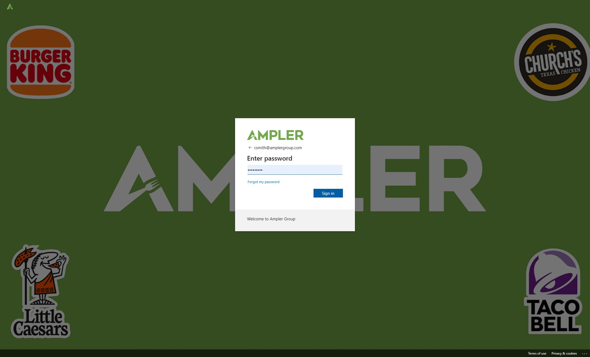
-
17Click "Yes" if you are on a private computer.\ Click "No" if you are on a public/office computer.

Outlook Mobile App (First Login)
-
18Click "Add an account"
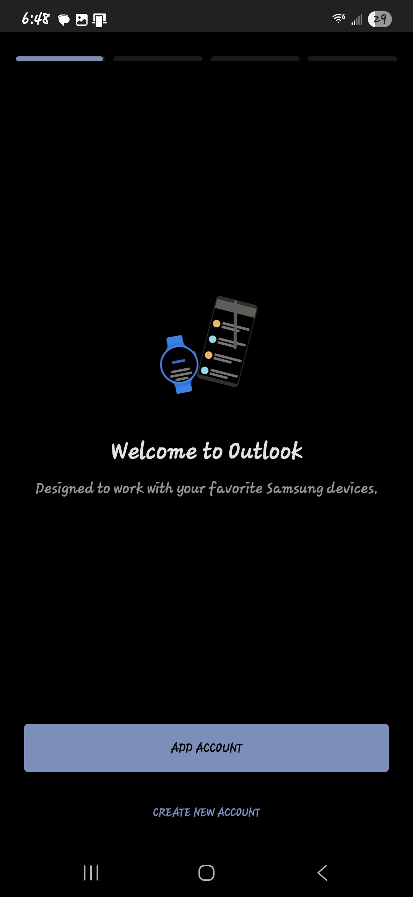
-
19Enter email address Click "Continue"
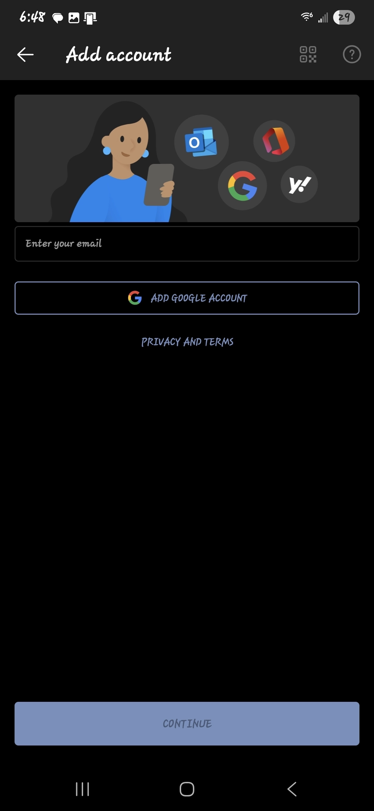
-
20Input password Click "Sign In"
Outlook Mobile App (Add Account)
-
21Open Outlook app Click Windows icon

-
22Click "+" icon
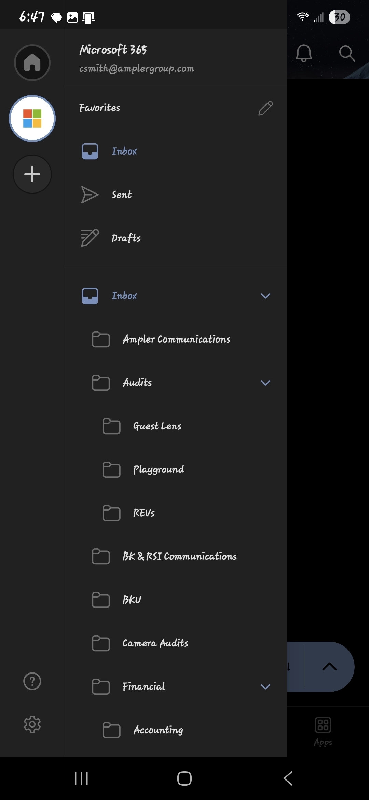
-
23Click "Add an account"
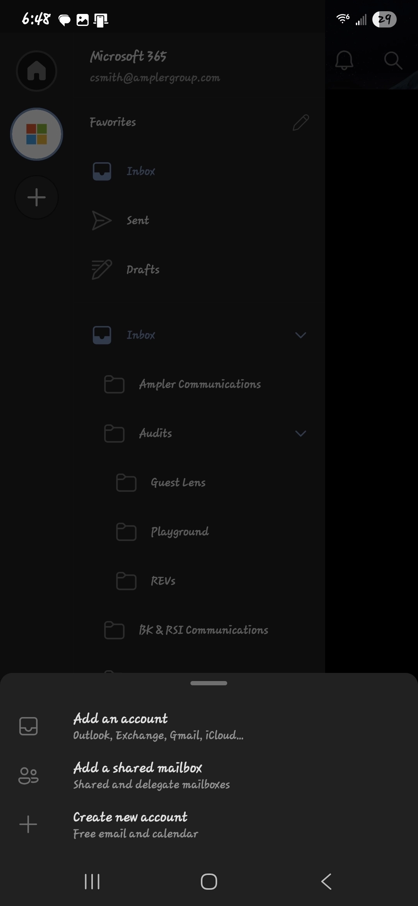
-
24Enter email address Click "Continue"

-
25Input password Click "Sign In"